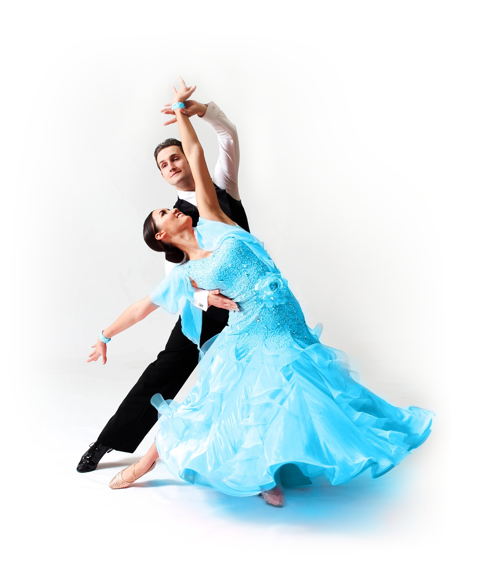
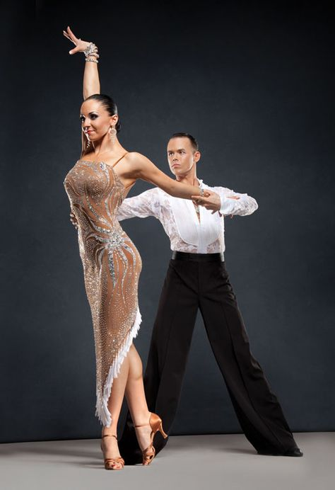
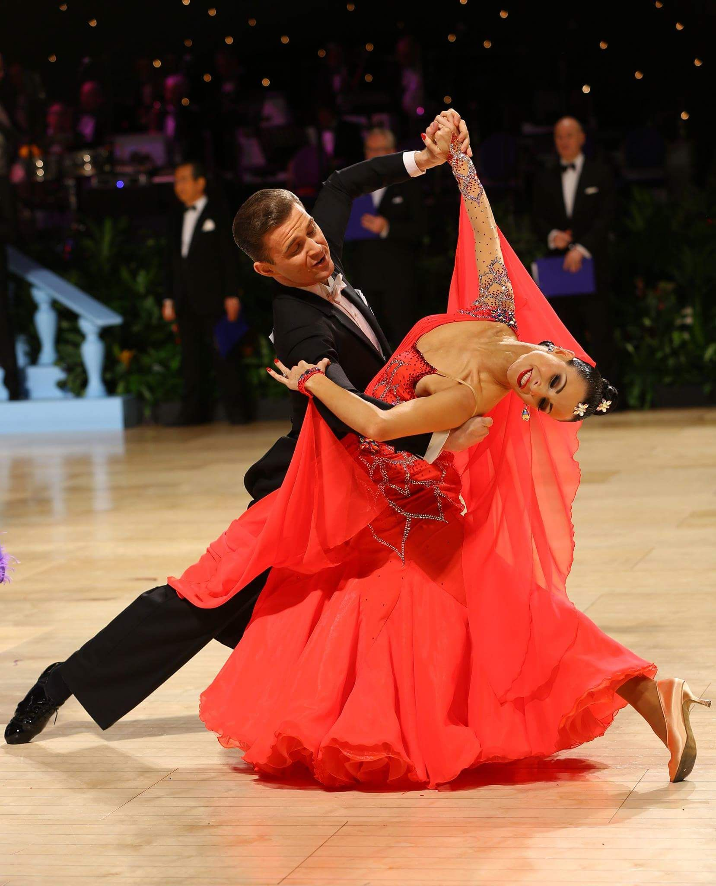
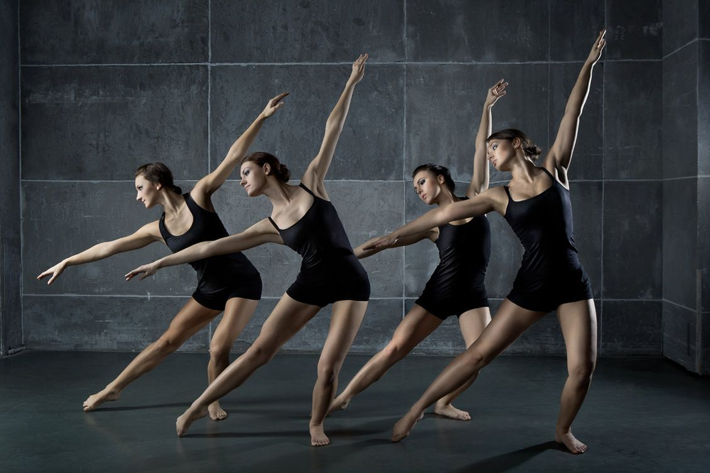
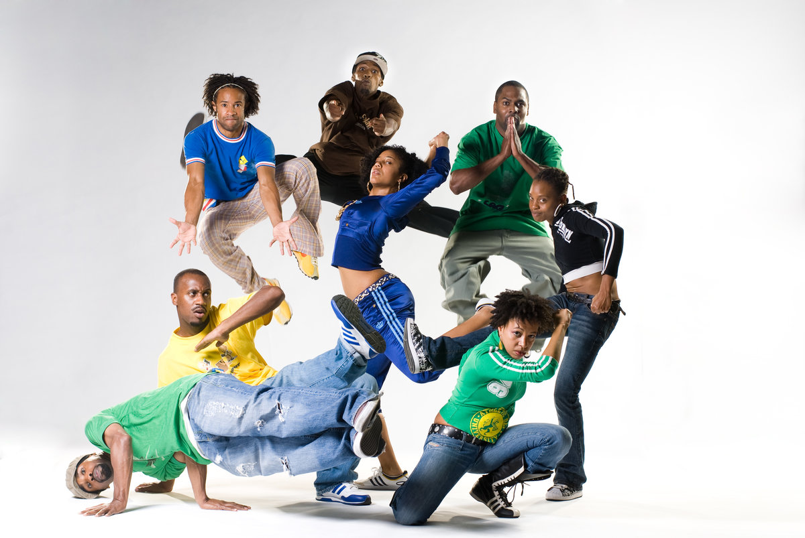
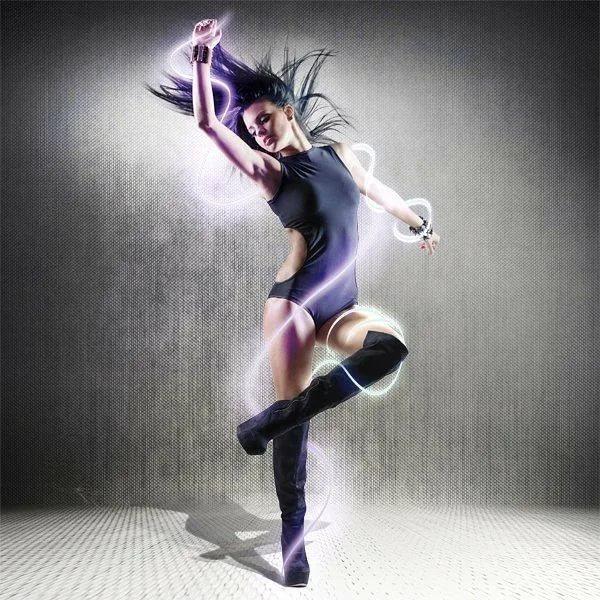
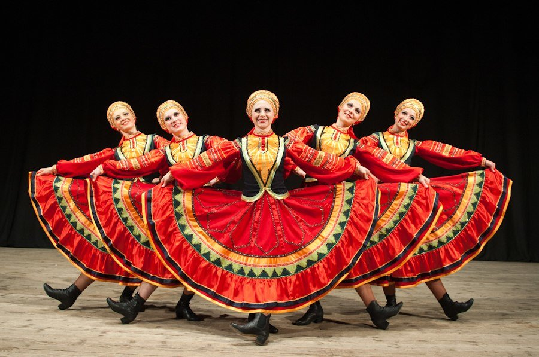
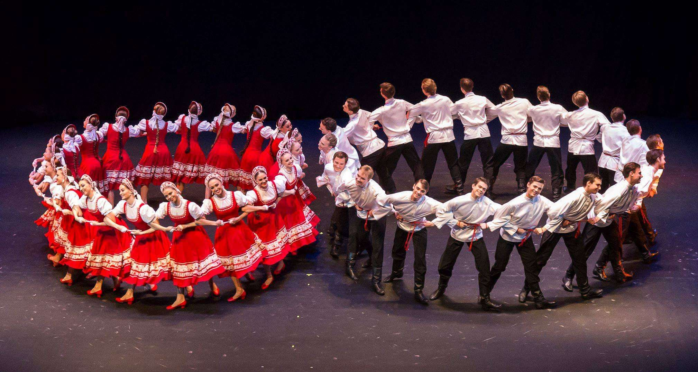
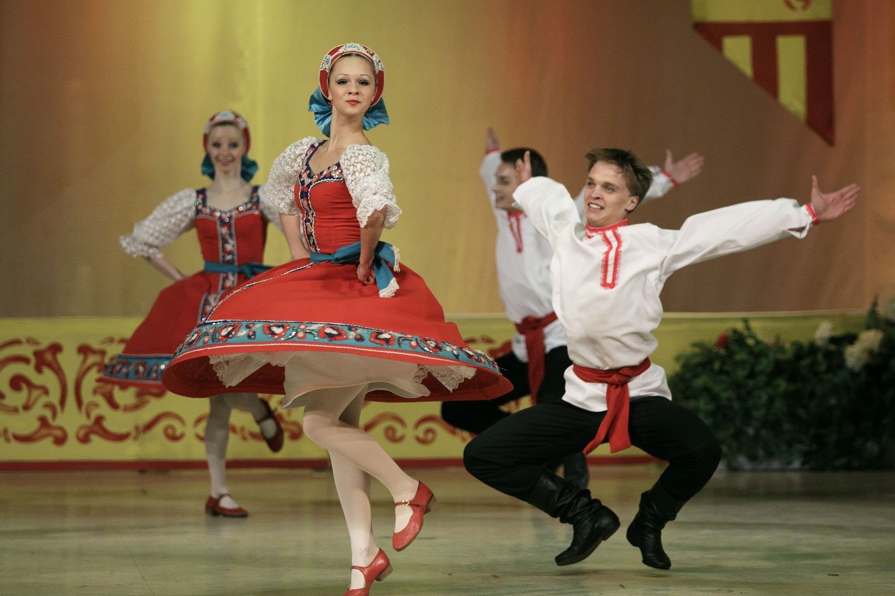

Бальные танцы



Бальные танцы — группа различных парных танцев, некоторые из которых имеют народные истоки. Исполнялись на балах, которые проводились в помещениях, застеленных паркетом. Из огромного разнообразия как элитных (историко-бытовых), так и народных танцев в группу бальных попали танцы, характеризующиеся 2 признаками: все бальные танцы являются парными; пару составляют мужчина и женщина.
Под "бальными танцами" в настоящее время подразумевают словосочетания "спортивные танцы" (СБТ, "спортивные бальные танцы") и "танцевальный спорт". Это отображено в названиях различных танцевальных организаций, например: "Московская федерация танцевального спорта".
Во всем танцевальном мире соревнования по спортивным танцам делятся на 3 программы: европейскую (Standart или Modern), латиноамериканскую (Latin) и десять танцев ("десятка").
В европейскую программу входят:
- медленный вальс
- танго
- венский вальс
- медленный фокстрот
- квикстеп
В латиноамериканскую программу:
- самба
- ча-ча-ча
- румба
- пасодобль
- джайв
Современные танцы



Современные танцы – «сборник» танцевальных стилей и направлений, объединённых особой атмосферой и техникой. Стили современных танцев обычно являются неотъемлемой частью различного рода субкультур. Так, все виды танцевального стиля хип-хопа – одно из направлений одноимённой субкультуры, все части которой – музыка, мода, стиль – связаны друг с другом неразрывно.
К современным танцам относятся:
- Уличные танцы (хип-хоп, брейк-данс, хаус)
- Леди Стайл (Pole dance, High Heels, стрипластика)
- Клубные танцы (хаус, транс)
- Эстрадные танцы
- Классическая хореография(балет)
Русские народные танцы



Являясь ярким и красочным творением, русский народный танец отражает эмоциональное, художественное и характерное представление о его многовековой истории. Он воплощает в себе всю творческую фантазию народа, глубину его мысли и чувства. Этот вид искусства несет в себе конкретную идею, которая очень точно отражается в постановках. В них присутствуют: драматургическая завязка, сюжет, замысловатые художественные образы, рождающиеся благодаря многообразию пластических движений и задуманных рисунков. Исполнительский образ воспринимается нами путем ассоциаций.
К народным относятся:
- Трепак
- Хоровод
- Русская пляска
- Игровые народные танцы
- Пляски-импровизации